GREEN WALLET
The problem
Many people in the diaspora struggle to register, renew, or recover official documents while living abroad—passports, driver’s licences, national identity numbers, and related credentials. Services are fragmented across embassies, local agencies in the UK, and offices in the customer’s home country.
Green Wallet set out to ease those challenges with one informative, multi-service platform where diaspora customers could understand requirements, start applications, and get support without chasing multiple channels.
Brief & role
The brief was framed as a UI/UX design for a national identity registration service aimed at diaspora customers, with a three-year business goal of £27m. I led UX strategy, research, information architecture, interaction design, and creative direction for the platform—including brand direction and a style guide to support delivery.
Before sketching screens, I mapped the problem space: the government bodies and partner agencies that control identity services, the rules that shape what a product can and cannot do, competitors at home and abroad, and the customers who have to navigate the process under real constraints of age, ability, cost, and time.
Methods planned for the project
- Desk research and competitive analysis
- Stakeholder and domain expert interviews
- Field research with the national identity agency
- Surveys and informal interviews with diaspora users
- Personas, decision paths, and progressive disclosure
- IA, flows, sketches, wireframes, and prototypes
- Usability and A/B testing throughout design
Research
After researching customers, the market, and competitors, a clear pattern emerged: diaspora communities face the same document and identity friction worldwide. They want one place that explains requirements while they travel, supports multiple document types, and makes it easy to get help when something goes wrong.
To design a multi-service platform, I needed to understand how document and ID agencies actually operate. The first service planned for launch was Nigeria’s National Identity Number (NIN). Citizens need a NIN before they can access many official Nigerian documents, including passports.
After exhausting public sources, I travelled from the UK to Nigeria to finish the research. I contacted the agency behind the national identity system and, while I could not meet the director general, I met the consultant who helped build the system. That conversation answered most of the remaining questions about registering diaspora applicants abroad, which companies can meet the requirements, and how partners make the service commercially viable.
With that process mapped, I reviewed three additional government document services planned for the platform: passport support, driver’s licence, and bank verification number (BVN).
Key findings
Agency processes follow a similar pattern: customers complete a form online or in person, biometrics are captured, data is submitted to government systems, and the finished document is returned through the agency or sent directly to the customer.
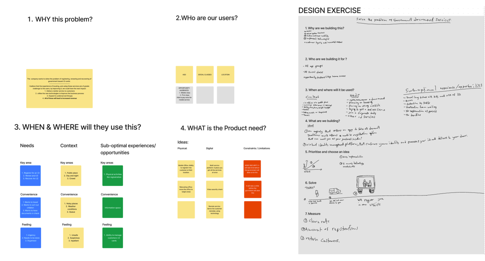
Design thinking
With clarity on operations and requirements, I ran a short product design exercise to frame stakeholders, schedule, communication, and project channels. I captured early thoughts and assumptions in a UX mind dump before locking the strategy.
Thoughts and assumptions
The problem exists both at home and abroad. People often struggle to find a reliable service without travel, bad weather, unexpected cost, or poor customer service. Most competitors rely on online forms plus physical document submission. Technology is rarely used to make the journey meaningfully easier.
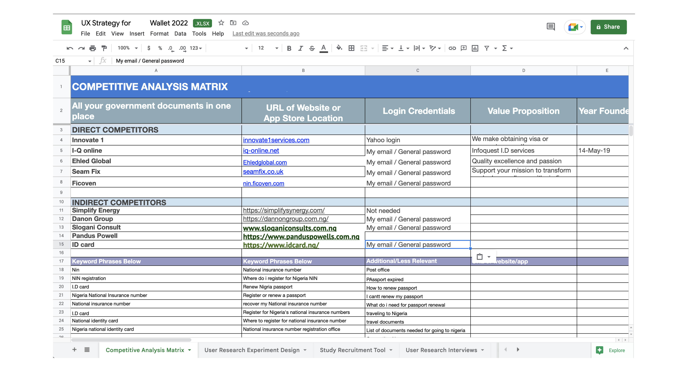
Strategy: user needs & business goals
I shaped the UX strategy around the project deadline and the £27m goal. The plan focused on understanding the business, users, and competitors; designing within government constraints; and still delivering a clear customer experience. User testing was built into the plan from the start, not treated as an afterthought.
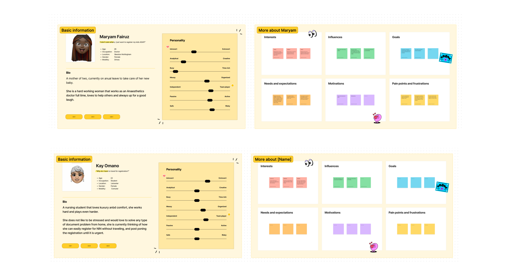
Personas: user needs and wants
With business goals, processes, and assumptions in place, I turned to how people would actually use the platform—what they expect, what the product can offer, and how to balance both.
After planning the survey, I started with friends and family who had registered for a NIN, then spoke with people who had not yet registered to understand awareness, barriers, and intent.
A consistent pattern emerged. It confirmed earlier conclusions and added sharper pain points before and after people interact with agencies.
Many users were unaware of government requirements introduced in 2014. They often learned about them only when a passport expired and they tried to renew it at the embassy.
The official national identity website lists companies authorised to register applicants abroad, but the experience is fragmented.
Several UK agencies offer unrelated services (construction, import/export) alongside identity work. Their websites rarely deliver a strong registration experience, and physical service quality does not appear to improve from customer feedback.
To design an all-in-one experience that could serve these journeys, I created five personas spanning ages 18–60, covering students, parents, and working professionals.
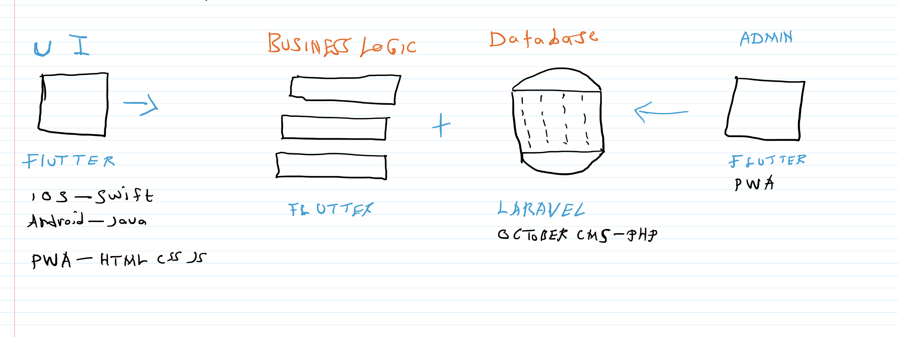
Business requirements
The core business need was an all-in-one platform that could host multiple document services. Across the processes I studied, the shared pattern was form completion, payment, and profile management. After reviewing technology and marketing constraints, I recommended Flutter as the build path.
Flutter supports a build-once, deploy-everywhere approach. Because the marketing plan did not depend on strong SEO—and Flutter’s web SEO support was limited at the time—I designed the product as an installable in-browser web application that could later ship to the iOS and Android app stores as security and feature needs evolved.
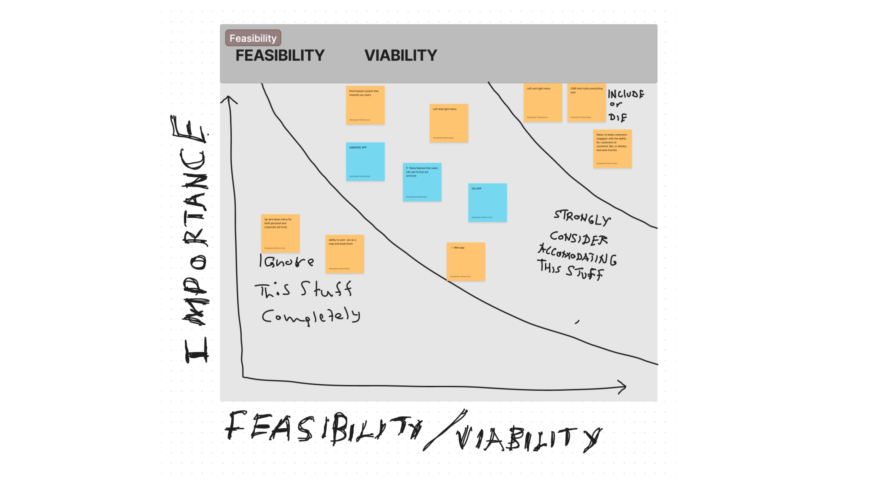
Choosing what is worth doing
During research, agencies interested in the project influenced the roadmap—including a digital currency idea that would let users spend their home-country currency while abroad. Those ideas were useful, but not all belonged in the first release. I evaluated features against importance, feasibility, and deadline, then deferred lower-priority work to later updates.
One practical tool was the “Buy a Feature” game: players spend a limited budget on the features they value most. Ideally the players are prospective users; it is equally useful with a client when scope threatens to expand.
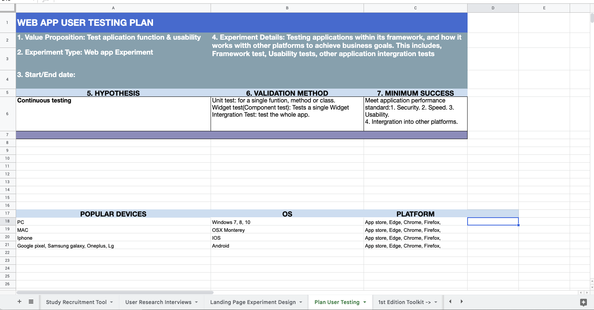
Planning for user testing
Before locking structure and screens, I planned how we would test. That kept development constraints and device reality in view while designing. I researched devices, operating systems, and technical ability for the audience, then built a checklist covering:
- Device and browser support
- Functionality
- Usability
- Errors and exceptions
- Compatibility
- Performance
- Security
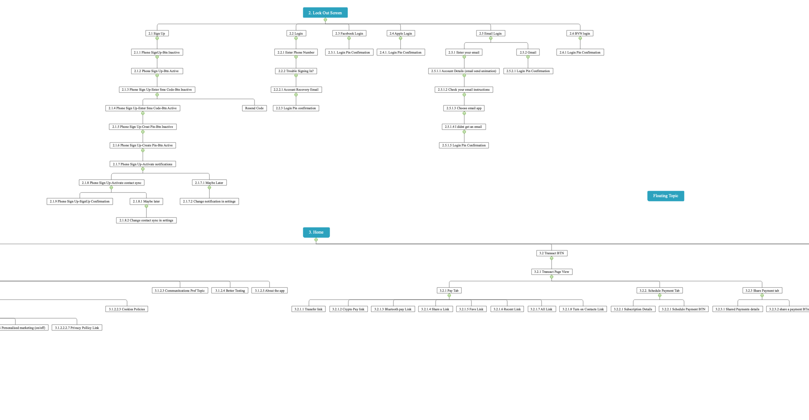
Information architecture
Next I structured the product. Each feature became its own section, and I built site maps that showed how services, profiles, news, and support would sit together without overwhelming first-time users.
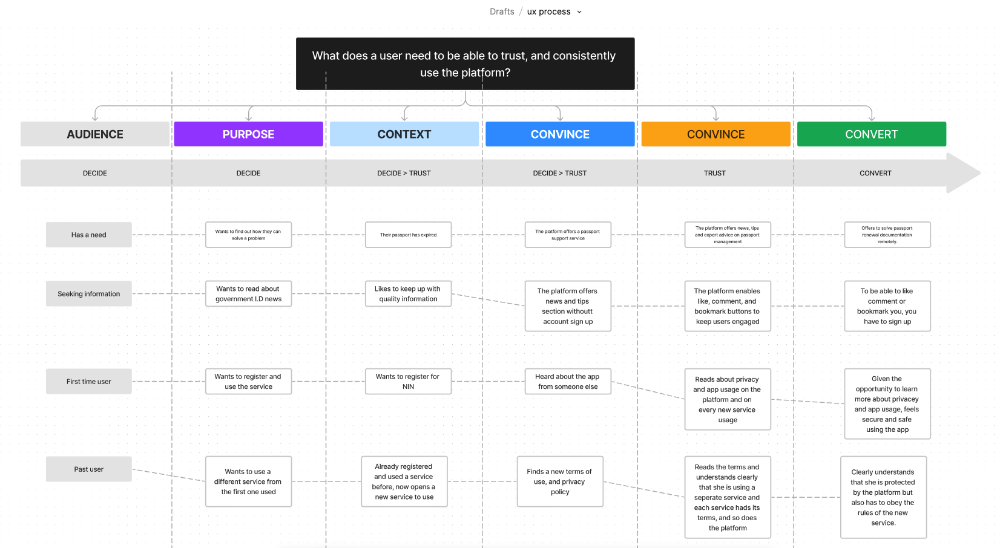
Decision path
With research on four services and survey insights for NIN, I mapped how a customer could move across those services on one platform and still make a confident buying decision.
Using progressive disclosure along the decision path, I looked for the smallest, most natural way to present information without unnecessary cognitive load.
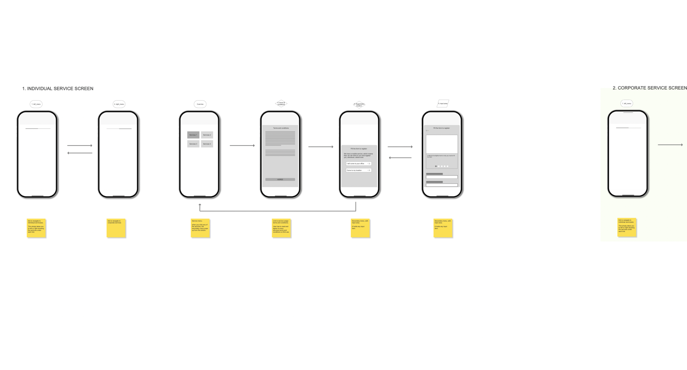
User flow
From the site map, I built a short, simple user flow that became the backbone of the usability strategy.
To validate the flow under time pressure, I turned it into an interactive low-fidelity prototype in Axure so stakeholders and users could click through the journey early.

Sketches
Sketching focused on the content framework first. Once the CMS structure was clear, the remaining service screens were much easier to resolve in wireframes.
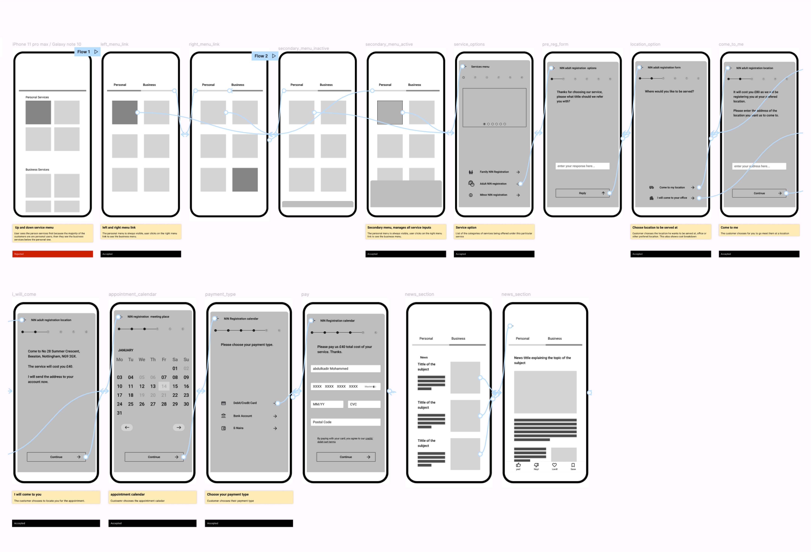
Wireframes
Designs were solved in stages. I first worked out left and right menu placement for personal and corporate services, then defined how a secondary menu would reveal service details without leaving the context of the home screen.
Individual service screens were treated as primary landing experiences, based on user data showing that people usually arrive with one clear task in mind.
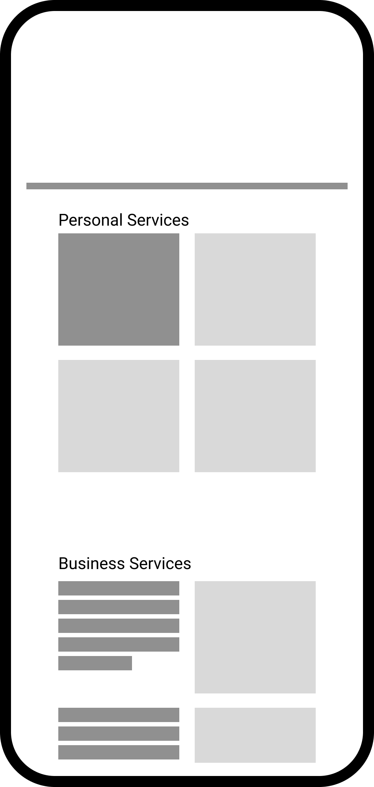
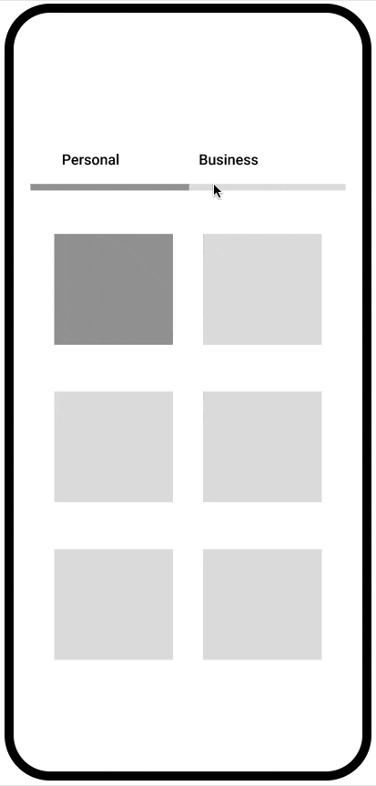
Categorising services for easy navigation
Navigation decisions stayed close to customer behaviour. A left-and-right split for individual and corporate services performed better in testing than a single vertical scroll menu.
Which menu appears first was based on the primary customer segment. Individual users often need access to both service types, so that path had to stay short.
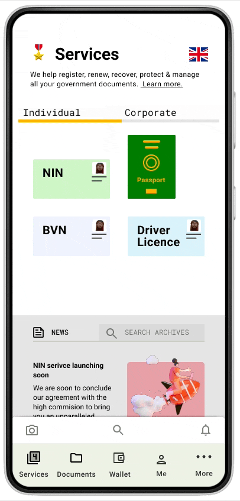
Helping users understand how the platform works
The company sometimes partners with other businesses or government agencies to bring services onto the platform. I needed a way to share that context without creating information overload.
The mission emphasises professional service with transparency, so each service opens with a short terms summary for a quick read, plus a link to the full agreement for anyone who wants detail.
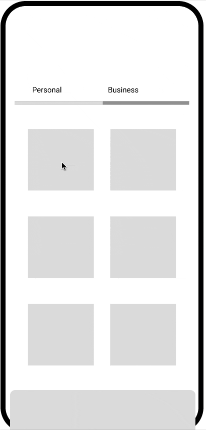
Simplifying the activity menu
Each service needs either information or a form. I A/B tested navigating to a new screen versus opening a modal on the same screen. The modal performed better: it appeared in context, was easy to dismiss, and made secondary menus simpler to implement.
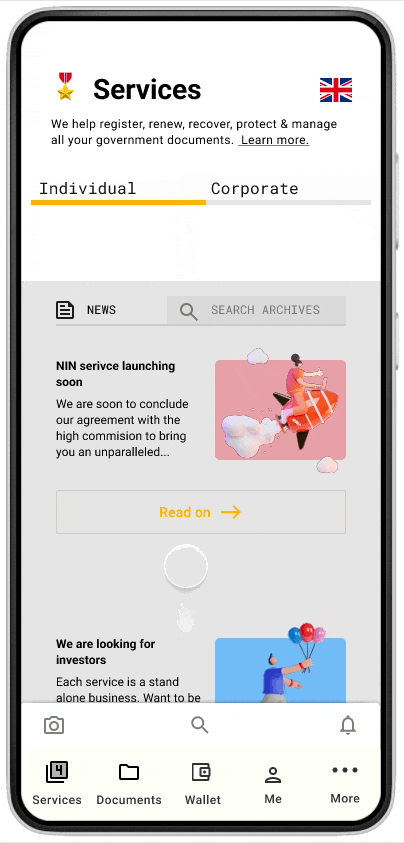
News & blog section
A key requirement was notification support for services, news, and blogs across the news section, in-app alerts, and email.
After A/B testing two news layouts, users preferred news below services on mobile and to the right on desktop. That layout still works as more services are added, because saved articles live in the profile and news alerts reach users there as well.
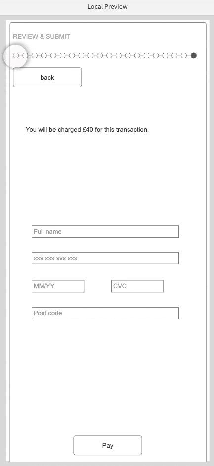
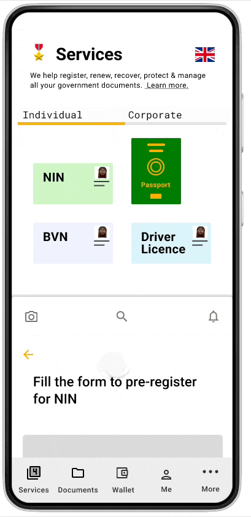
Service forms
I first shipped a simple form under time pressure. After reviewing market trends, I explored a more interactive form in a high-fidelity Axure prototype that behaved close to a production build. A/B tests showed similar results for both versions, so the interactive form was deferred to a future update.
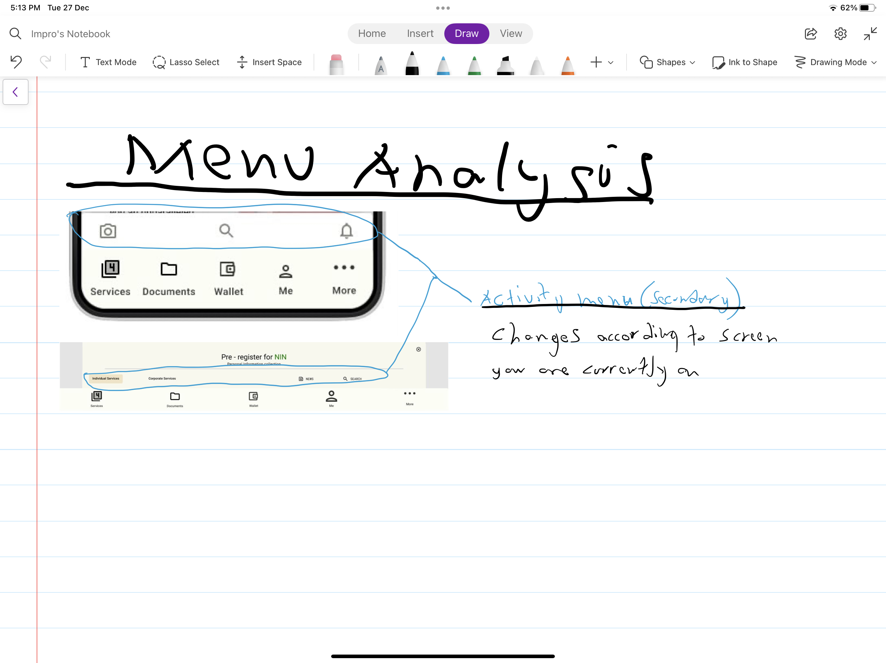
Desktop & mobile menu choices
On desktop, the primary menu sits at the bottom. The product is an installable desktop web app, and emerging patterns suggested browser chrome would move downward over time—so the choice matched both product behaviour and trend research.
The secondary menu stays fixed at the bottom on desktop. On mobile it moves to the top with the activity menu, and the menu type changes with the page in view.
The activity menu holds inputs and outputs for each service. It can open in place to show the next actions for the service the user selected. Those placements were validated in testing.
Primary menus behave the same on desktop and mobile; only the elements shown change with screen size.
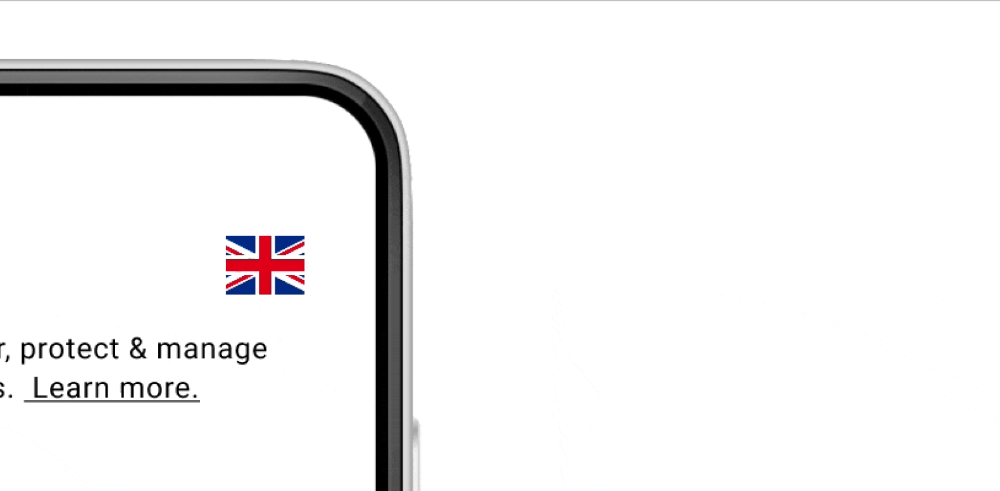
Location recognition
Service costs vary by region, so location awareness became part of the experience: a flag icon that updates with the user’s location, notifications when location changes, and clear messaging about which services and prices are affected.
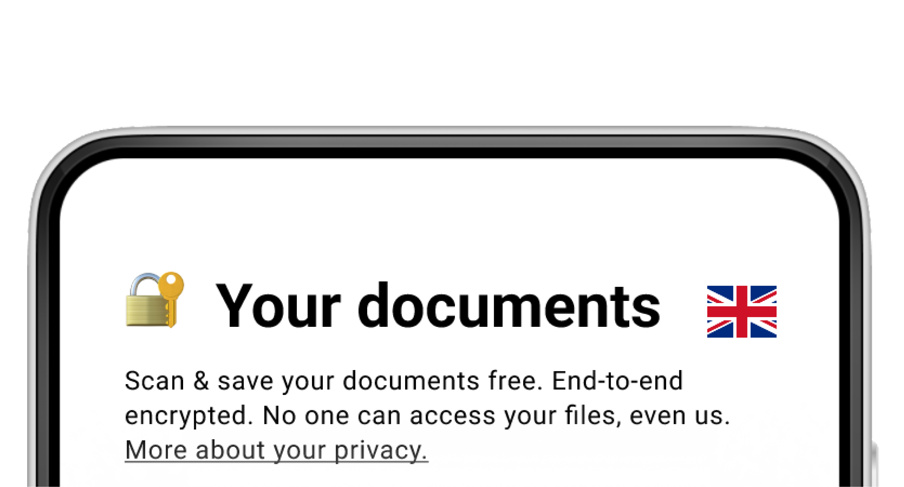
Highlighting platform security
Security matters on a product that handles private identity data. The platform plan included 256-bit AES encryption for files and SSL/TLS to protect data in transit between the apps and servers.
Design needed to reinforce that trust. I used a padlock-and-key cue on headings, short captions that remind users of the security model on each sensitive page, and a path to read more about how their data is protected.
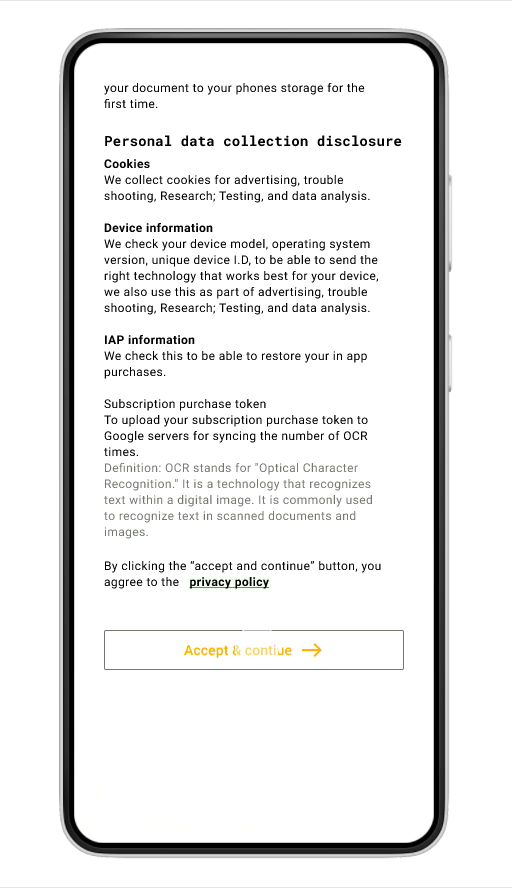
Free document scanner
A free scanner helps customers keep digital copies of important documents wherever they are—ready to share with agencies, family, or friends, or to print when needed.
I introduced the scanner as a strategic free utility: it makes the platform useful between paid transactions, increases time on platform, and gives people a reason to return.

Final product
The result is a service-driven product built around a core management layer: clear presentation of services and information, a free document management section, and a money management section—designed so diaspora customers can handle identity and document tasks in one place.
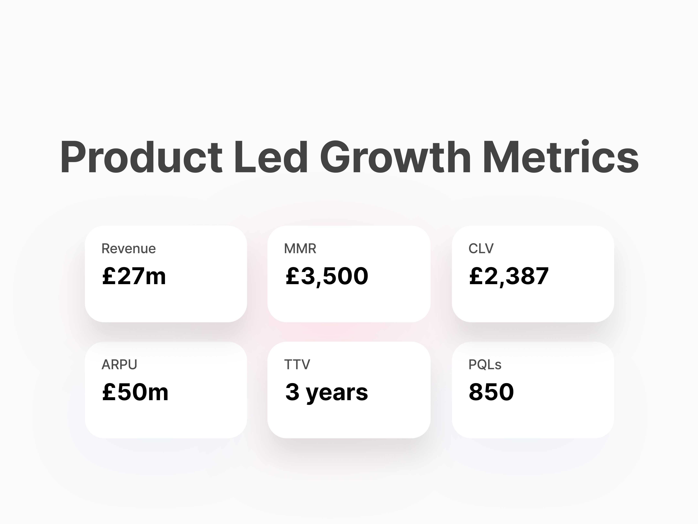
Measuring success
Success, for this work, meant a product people return to, that creates momentum with users and partners, that raises the standard of diaspora document services, and that supports the company’s three-year £27m goal.
The high-fidelity prototype demo helped secure the right partners; an investor said yes during the pitch.
The pattern library was expected to cut collaboration time by about 50%.
The Bootstrap MVP was expected to cut development time by about 60%.
Next steps: observe, test, and iterate until the metrics are met.
Deliverables
UX strategy documentation Strategy built from the company brief, constraints, and research so design decisions stayed tied to business and user goals.
User research documentation Research to hear stated needs, uncover actual needs, and surface unknown needs so I could advocate for users with evidence.
Industry & market research documentation Industry and market research to validate the brief, understand the business deeply, and find where UX could add value.
Competitive analysis documentation Competitive analysis to compare operating patterns, technology choices, and trends across local and overseas providers.
Riskiest assumptions documentation Identification, categorisation, analysis, and validation of the assumptions most likely to break the product.
IA & sitemap workbook & documentation Information architecture and sitemaps to define how users navigate a multi-service digital platform.
Sketches, wireframes, prototypes workbook & documentation Full visual exploration from sketches through interactive prototypes within the project timeline.
User testing documentation Testing at each stage to validate models and resolve usability issues before they reached development.
A/B testing documentation A/B tests for complex navigation and layout choices that needed more than one design direction.
Fonts, colours, typography, spacing assets & documentation Visual foundations documented for consistent future updates.
Style guides, pattern library, design systems, HTML & CSS templates & documentation Reference assets for teams to reuse in design and development.
Design assets & documentation Application UI design delivered as a core project deliverable.
High-fidelity prototype assets & documentation High-fidelity prototype used for stakeholder demos and the development pitch deck.
Pattern library development assets & documentation A coded pattern library to speed collaboration and reduce handoff friction—estimated ~50% less collaboration time.
Bootstrap prototype assets & documentation A Bootstrap prototype prepared so the project could move into development faster after funding delays—estimated ~60% reduction in early development time.